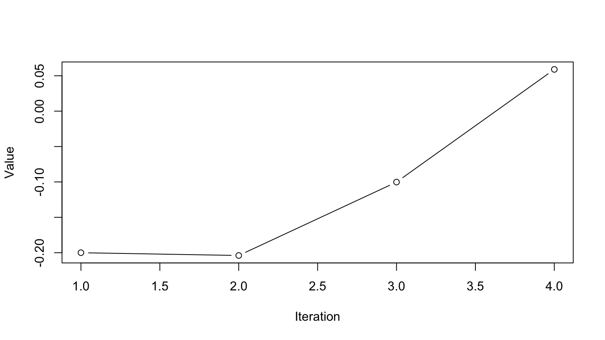
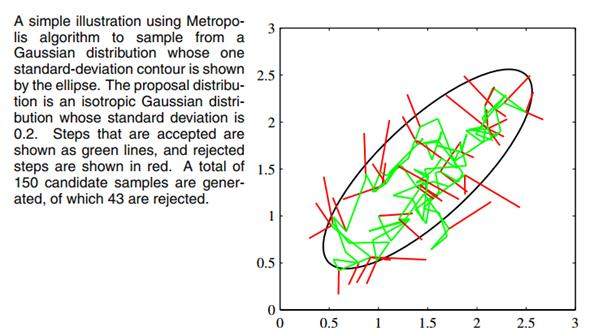
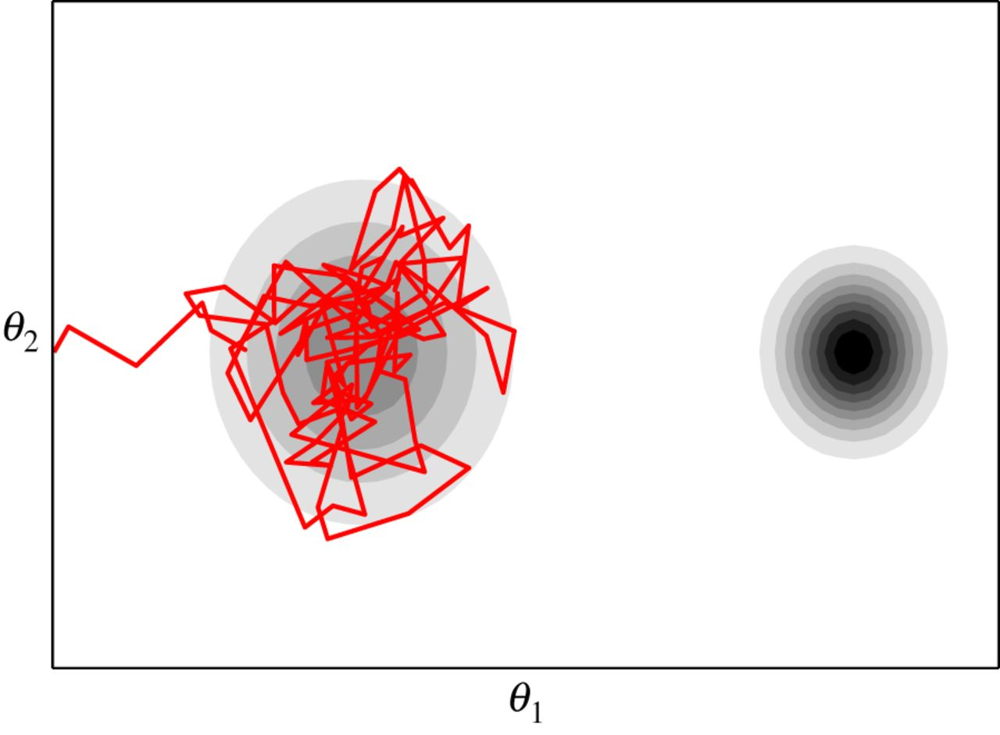
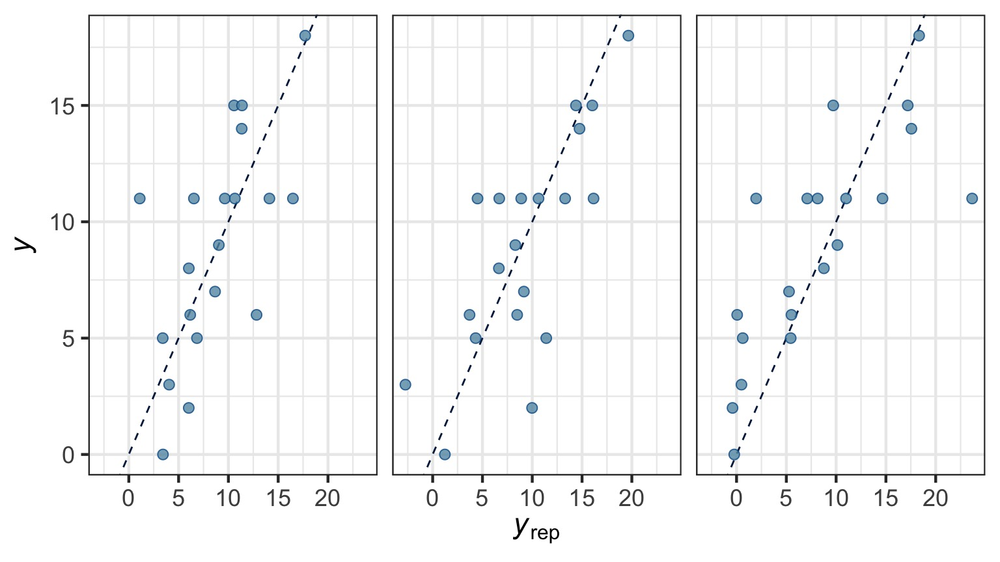
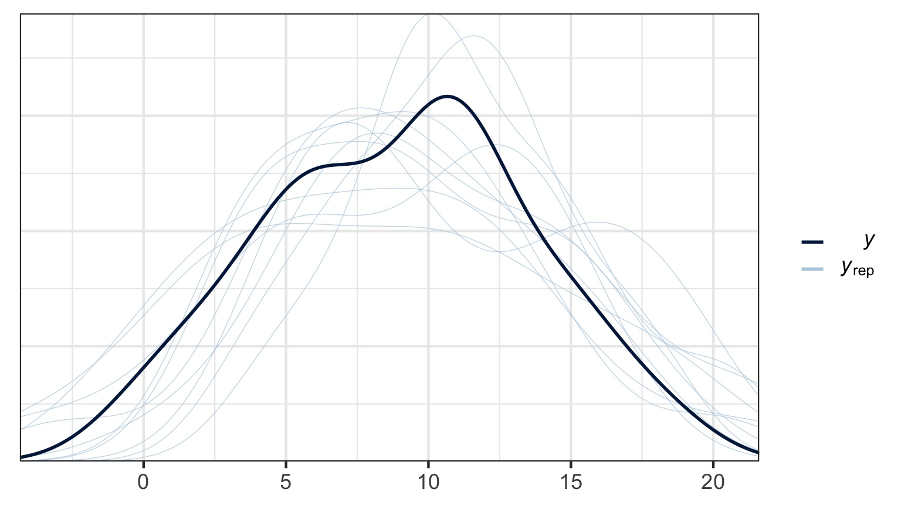
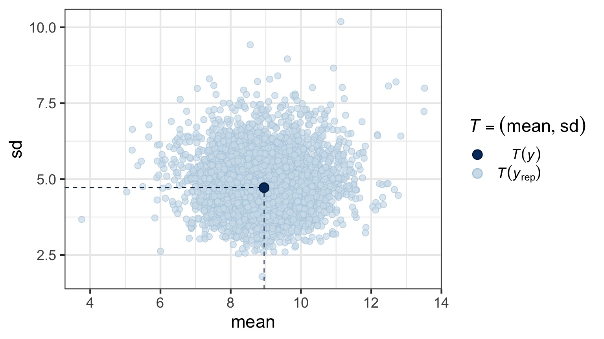
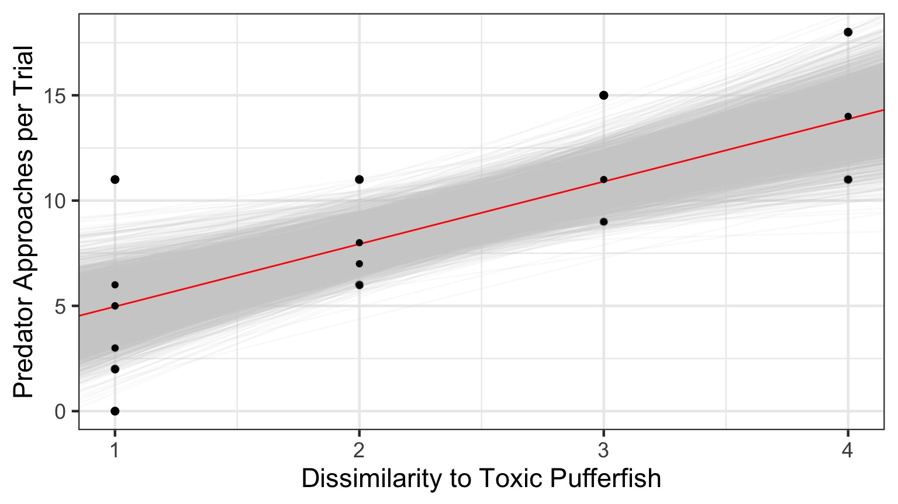

Fitting Linear Models with Bayes

Our Etherpad
Bayesian Inference

Estimate probability of a parameter
State degree of believe in specific parameter values
Evaluate probability of hypothesis given the data
Incorporate prior knowledge
Today
Markov Chain Monte-Carlo Sampling
Fitting and evaluating linear models fit with MCMC
Modifying our Prior
Bayes Theorem So Far
\(p(\theta | X) = \frac{p(X | \theta)P(\theta)}{\displaystyle \sum_{i=0}^{j} p(X | \theta_{i})p(\theta_{i})}\)
Algebraically Solvable
What About Continuous Variables
\(p(\theta | X) = \frac{p(X | \theta)P(\theta)}{\int p(X | \theta)p(\theta)d\theta}\)
Analytically Solveable for Conjugate Priors…for linear models
But Where are we going?
\(p(\theta | X) = \frac{\int p(X | \theta)P(\theta|\eta)p(\eta)d\eta}{\int\int p(X | \theta)p(\theta)d\theta d\eta}\)
Non-gaussian models, hierarchical models, and more: need numerical integration approach
Markov Chain Monte Carlo Sampling (MCMC)

Solution: Sampling from the Posterior
- We don’t need to integrate/sample everything
- What if we tried candidate values of \(\theta\) to get p(X|\(\theta\))
- If we had a clever way of searching parameter space…
- Maybe, spending more time sampling more likely values?
- Enter the ATOM BOMB!
Markov Chain Monte Carlo Sampling (MCMC)
If we cannot analytically solve a distribution, we can still simulate from it:
Chose a set of starting values X at t=0
Chose a random set of parameters, Y, based on X
Calculate an acceptance ratio, \(\alpha\), based on P(Y)/P(X)
If \(\alpha \ge 1\) X(t+1) = Y
Otherwise, select a uniform random number between 0 and 1, U
If \(U \le \alpha\), X(t+1) = Y. Otherwise, X(t+1) = X.
Rinse and repeat
(Note, this is the Metropolis-Hastings Algorithm - there are others)
King Markov and His Islands (sensu Richard McElreath)

King Markov and His Islands

How to move around Islands
Metropolis MCMC in Action: 10 Weeks
Population = Island Number
Metropolis MCMC in Action: 50 Weeks
Population = Island Number
Metropolis MCMC in Action: 1000 Weeks
Population = Island Number
Metropolis MCMC For Models
- Each island is a set of parameter choices
- Each “population” is a posterior density
- The path is a ‘chain’
Markov Chain Monte Carlo Sampling (MCMC)
This is a time series. To use it for inference to sample from the final stationary distribution:
Discard a ’burn in’ set of samples
‘Thin’ your chain or use other methods to reduce temporal autocorrelation
Examine chain for convergence on your posterior distribution
Evaluate multiple chains to ensure convergence to a single distribution
Markov Chain Monte Carlo Sampling (MCMC)
Markov Chain Monte Carlo Sampling (MCMC)

Markov Chain Monte Carlo Sampling (MCMC)
Markov Chain Monte Carlo Sampling (MCMC)

Markov Chain Monte Carlo Sampling (MCMC)
Markov Chain Monte Carlo Sampling (MCMC)
Markov Chain Monte Carlo Sampling (MCMC)
Markov Chain Monte Carlo Sampling (MCMC)

Multiple Chains to Check Convergence and Improve Answer
MCMC In Practice for Models
MCMC is not a Panacea
MCMC is not a Panacea

How can MCMC Fail?
- MCMC (particularly Metropolis) can get stuck
- Start values can still be important
- Particularly a problem with many parameters which are correlated
- One way we try and assess is fit with many chains and make sure they converge
MCMC Algorithms
- Metropolis MCMC inefficient
- Many algorithms to come up with clever proposed moves to speed up
- Gibbs sampling used for BUGS, JAGS, etc.
- Still has same problems as Metropilis
- Still has same problems as Metropilis
- Or… Abandon search and use more deterministic sampling
- Hamiltonian MCMC
King Hamilton and His BatBoat (also from McElreath)
King Hamilton and His BatBoat
- Boat passes by all of the island, back and forth
- Boat slows to see people in porportion to how many folk
- We sample position through time, more positions in areas where boat is slow
Metropolis versus Hamiltonian

Metropolis versus Hamiltonian

Metropolis versus Hamiltonian

Implementing HMC via Stan

- A few libraries in R use Stan
rstanarmis from the Stan team- several pre-compiled models
- several pre-compiled models
brmsis constantly expanding- Models compiled, but, infinitely flexible
Linear Modeling with Bayes
brms
Powerful package that fits bayesian models using Hamiltonian Monte-Carlo (reduced autocorrelation in chain)
Available tools to tweak priors
Flexible in error distribution
Can accomodate random effects, autocorrelation, etc
Uses STAN to fit models, but same syntax as base R models
Constantly updated for more weird models (post an issue, I give it 2 days)
Compiles model into C++ code, then samples
For maximum flexibility, rethinking or rstan
Bayesian Pufferfish
- Pufferfish are toxic/harmful to predators
- Batesian mimics gain protection from predation
- Evolved response to appearance?
- Researchers tested with mimics varying in toxic pufferfish resemblance

Does Resembling a Pufferfish Reduce Predator Visits?

The Steps of Statistical Modeling
- What is your question?
- What model of the world matches your question?
- Build a model
- Evaluate model assumptions
- Evaluate model results
- Visualize
Implementing the Puffer Model in brms
What were the priors?
prior class coef group resp dpar nlpar bound
1 b
2 b resemblance
3 student_t(3, 10, 10) Intercept
4 student_t(3, 0, 10) sigma Note that these are flat (slope) or weakly informative!
MCMC diagnostics - Convergence and Posterior Behavior
These are all checks of the model fitting process. If they fail, either tweak the MCMC process (e.g., nsims), or your model is incompatible with the data
All assumptions of linear regression hold - and then there are a few checks for MCMC fits
Good ole’ QQ

But - often use simulated posterior estimates

Observed v. Average of Simulated Fitted Value

Do Simulated Posterios of the Data Fit our Observations?
Blue = Distribution of our observations, Lines = Simulations 
Does Distribution of Sample Estimates Match Distribution of Simulated Sample Estimates?

Does Distribution of Error Match Distribution of Simulated Error Estimates?

How sensitive is our simulation to leaving out one value?

If >1, inspect that point!
These are all data and error generating process checks. If they fail, you may need to respecify your model (or your prior)
Finally - the Parameters

So…. what did we get?
Family: gaussian
Links: mu = identity; sigma = identity
Formula: predators ~ resemblance
Data: puffer (Number of observations: 20)
Samples: 4 chains, each with iter = 2000; warmup = 1000; thin = 1;
total post-warmup samples = 4000
Population-Level Effects:
Estimate Est.Error l-95% CI u-95% CI Eff.Sample Rhat
Intercept 2.00 1.65 -1.08 5.35 3168 1.00
resemblance 2.97 0.62 1.66 4.19 3252 1.00
Family Specific Parameters:
Estimate Est.Error l-95% CI u-95% CI Eff.Sample Rhat
sigma 3.26 0.59 2.36 4.67 2873 1.00
Samples were drawn using sampling(NUTS). For each parameter, Eff.Sample
is a crude measure of effective sample size, and Rhat is the potential
scale reduction factor on split chains (at convergence, Rhat = 1).
Note Rhat values - must = 1!!!
Or, just look at your Credible Interval
For 80% Credible Interval:
10% 90%
b_Intercept -0.07782262 4.061401
b_resemblance 2.19418257 3.732649
sigma 2.59563720 4.026133
lp__ -57.97553042 -54.865521What is the weight of the tail less that 0?
Weight of Intercept ≤ 0? 0.1085
Weight of Slope ≤ 0? 0
Talking about Uncertainty the IPCC Way
 {width = “80%”}
{width = “80%”}
Compare to LM
Bayesian Fit| term | estimate | std.error | lower | upper |
|---|---|---|---|---|
| b_Intercept | 2.00 | 1.65 | -0.66 | 4.69 |
| b_resemblance | 2.97 | 0.62 | 1.90 | 3.98 |
| sigma | 3.26 | 0.59 | 2.47 | 4.31 |
| lp__ | -56.14 | 1.34 | -58.76 | -54.74 |
| term | estimate | std.error | statistic | p.value |
|---|---|---|---|---|
| (Intercept) | 1.92 | 1.51 | 1.28 | 0.22 |
| resemblance | 2.99 | 0.57 | 5.23 | 0.00 |
Visualize the mean fit…
And the distributions of fits

And the distributions of fits
Add the distribution of predictions
OK, ok, but what about the prior…

See your posterior relative to your prior
prior class coef group resp dpar nlpar bound
1 b
2 b resemblance
3 student_t(3, 10, 10) Intercept
4 student_t(3, 0, 10) sigma Adding a stronger prior
puffer_brms_prior <- brm(predators ~ resemblance,
family = gaussian(link = "identity"),
data = puffer,
prior = c(prior(normal(3, 1), class = Intercept),
prior(normal(1, 0.5), class = b),
prior(uniform(0, 10), class = sigma))) In file included from file2676668b5a19.cpp:8:
In file included from /Library/Frameworks/R.framework/Versions/3.5/Resources/library/StanHeaders/include/src/stan/model/model_header.hpp:4:
In file included from /Library/Frameworks/R.framework/Versions/3.5/Resources/library/StanHeaders/include/stan/math.hpp:4:
In file included from /Library/Frameworks/R.framework/Versions/3.5/Resources/library/StanHeaders/include/stan/math/rev/mat.hpp:4:
In file included from /Library/Frameworks/R.framework/Versions/3.5/Resources/library/StanHeaders/include/stan/math/rev/core.hpp:14:
In file included from /Library/Frameworks/R.framework/Versions/3.5/Resources/library/StanHeaders/include/stan/math/rev/core/matrix_vari.hpp:4:
In file included from /Library/Frameworks/R.framework/Versions/3.5/Resources/library/StanHeaders/include/stan/math/rev/mat/fun/Eigen_NumTraits.hpp:4:
In file included from /Library/Frameworks/R.framework/Versions/3.5/Resources/library/StanHeaders/include/stan/math/prim/mat/fun/Eigen.hpp:4:
In file included from /Library/Frameworks/R.framework/Versions/3.5/Resources/library/RcppEigen/include/Eigen/Dense:1:
In file included from /Library/Frameworks/R.framework/Versions/3.5/Resources/library/RcppEigen/include/Eigen/Core:531:
/Library/Frameworks/R.framework/Versions/3.5/Resources/library/RcppEigen/include/Eigen/src/Core/util/ReenableStupidWarnings.h:10:30: warning: pragma diagnostic pop could not pop, no matching push [-Wunknown-pragmas]
#pragma clang diagnostic pop
^
In file included from file2676668b5a19.cpp:8:
In file included from /Library/Frameworks/R.framework/Versions/3.5/Resources/library/StanHeaders/include/src/stan/model/model_header.hpp:4:
In file included from /Library/Frameworks/R.framework/Versions/3.5/Resources/library/StanHeaders/include/stan/math.hpp:4:
In file included from /Library/Frameworks/R.framework/Versions/3.5/Resources/library/StanHeaders/include/stan/math/rev/mat.hpp:4:
In file included from /Library/Frameworks/R.framework/Versions/3.5/Resources/library/StanHeaders/include/stan/math/rev/core.hpp:14:
In file included from /Library/Frameworks/R.framework/Versions/3.5/Resources/library/StanHeaders/include/stan/math/rev/core/matrix_vari.hpp:4:
In file included from /Library/Frameworks/R.framework/Versions/3.5/Resources/library/StanHeaders/include/stan/math/rev/mat/fun/Eigen_NumTraits.hpp:4:
In file included from /Library/Frameworks/R.framework/Versions/3.5/Resources/library/StanHeaders/include/stan/math/prim/mat/fun/Eigen.hpp:4:
In file included from /Library/Frameworks/R.framework/Versions/3.5/Resources/library/RcppEigen/include/Eigen/Dense:2:
In file included from /Library/Frameworks/R.framework/Versions/3.5/Resources/library/RcppEigen/include/Eigen/LU:47:
/Library/Frameworks/R.framework/Versions/3.5/Resources/library/RcppEigen/include/Eigen/src/Core/util/ReenableStupidWarnings.h:10:30: warning: pragma diagnostic pop could not pop, no matching push [-Wunknown-pragmas]
#pragma clang diagnostic pop
^
In file included from file2676668b5a19.cpp:8:
In file included from /Library/Frameworks/R.framework/Versions/3.5/Resources/library/StanHeaders/include/src/stan/model/model_header.hpp:4:
In file included from /Library/Frameworks/R.framework/Versions/3.5/Resources/library/StanHeaders/include/stan/math.hpp:4:
In file included from /Library/Frameworks/R.framework/Versions/3.5/Resources/library/StanHeaders/include/stan/math/rev/mat.hpp:4:
In file included from /Library/Frameworks/R.framework/Versions/3.5/Resources/library/StanHeaders/include/stan/math/rev/core.hpp:14:
In file included from /Library/Frameworks/R.framework/Versions/3.5/Resources/library/StanHeaders/include/stan/math/rev/core/matrix_vari.hpp:4:
In file included from /Library/Frameworks/R.framework/Versions/3.5/Resources/library/StanHeaders/include/stan/math/rev/mat/fun/Eigen_NumTraits.hpp:4:
In file included from /Library/Frameworks/R.framework/Versions/3.5/Resources/library/StanHeaders/include/stan/math/prim/mat/fun/Eigen.hpp:4:
In file included from /Library/Frameworks/R.framework/Versions/3.5/Resources/library/RcppEigen/include/Eigen/Dense:3:
In file included from /Library/Frameworks/R.framework/Versions/3.5/Resources/library/RcppEigen/include/Eigen/Cholesky:12:
In file included from /Library/Frameworks/R.framework/Versions/3.5/Resources/library/RcppEigen/include/Eigen/Jacobi:29:
/Library/Frameworks/R.framework/Versions/3.5/Resources/library/RcppEigen/include/Eigen/src/Core/util/ReenableStupidWarnings.h:10:30: warning: pragma diagnostic pop could not pop, no matching push [-Wunknown-pragmas]
#pragma clang diagnostic pop
^
In file included from file2676668b5a19.cpp:8:
In file included from /Library/Frameworks/R.framework/Versions/3.5/Resources/library/StanHeaders/include/src/stan/model/model_header.hpp:4:
In file included from /Library/Frameworks/R.framework/Versions/3.5/Resources/library/StanHeaders/include/stan/math.hpp:4:
In file included from /Library/Frameworks/R.framework/Versions/3.5/Resources/library/StanHeaders/include/stan/math/rev/mat.hpp:4:
In file included from /Library/Frameworks/R.framework/Versions/3.5/Resources/library/StanHeaders/include/stan/math/rev/core.hpp:14:
In file included from /Library/Frameworks/R.framework/Versions/3.5/Resources/library/StanHeaders/include/stan/math/rev/core/matrix_vari.hpp:4:
In file included from /Library/Frameworks/R.framework/Versions/3.5/Resources/library/StanHeaders/include/stan/math/rev/mat/fun/Eigen_NumTraits.hpp:4:
In file included from /Library/Frameworks/R.framework/Versions/3.5/Resources/library/StanHeaders/include/stan/math/prim/mat/fun/Eigen.hpp:4:
In file included from /Library/Frameworks/R.framework/Versions/3.5/Resources/library/RcppEigen/include/Eigen/Dense:3:
In file included from /Library/Frameworks/R.framework/Versions/3.5/Resources/library/RcppEigen/include/Eigen/Cholesky:43:
/Library/Frameworks/R.framework/Versions/3.5/Resources/library/RcppEigen/include/Eigen/src/Core/util/ReenableStupidWarnings.h:10:30: warning: pragma diagnostic pop could not pop, no matching push [-Wunknown-pragmas]
#pragma clang diagnostic pop
^
In file included from file2676668b5a19.cpp:8:
In file included from /Library/Frameworks/R.framework/Versions/3.5/Resources/library/StanHeaders/include/src/stan/model/model_header.hpp:4:
In file included from /Library/Frameworks/R.framework/Versions/3.5/Resources/library/StanHeaders/include/stan/math.hpp:4:
In file included from /Library/Frameworks/R.framework/Versions/3.5/Resources/library/StanHeaders/include/stan/math/rev/mat.hpp:4:
In file included from /Library/Frameworks/R.framework/Versions/3.5/Resources/library/StanHeaders/include/stan/math/rev/core.hpp:14:
In file included from /Library/Frameworks/R.framework/Versions/3.5/Resources/library/StanHeaders/include/stan/math/rev/core/matrix_vari.hpp:4:
In file included from /Library/Frameworks/R.framework/Versions/3.5/Resources/library/StanHeaders/include/stan/math/rev/mat/fun/Eigen_NumTraits.hpp:4:
In file included from /Library/Frameworks/R.framework/Versions/3.5/Resources/library/StanHeaders/include/stan/math/prim/mat/fun/Eigen.hpp:4:
In file included from /Library/Frameworks/R.framework/Versions/3.5/Resources/library/RcppEigen/include/Eigen/Dense:4:
In file included from /Library/Frameworks/R.framework/Versions/3.5/Resources/library/RcppEigen/include/Eigen/QR:17:
In file included from /Library/Frameworks/R.framework/Versions/3.5/Resources/library/RcppEigen/include/Eigen/Householder:27:
/Library/Frameworks/R.framework/Versions/3.5/Resources/library/RcppEigen/include/Eigen/src/Core/util/ReenableStupidWarnings.h:10:30: warning: pragma diagnostic pop could not pop, no matching push [-Wunknown-pragmas]
#pragma clang diagnostic pop
^
In file included from file2676668b5a19.cpp:8:
In file included from /Library/Frameworks/R.framework/Versions/3.5/Resources/library/StanHeaders/include/src/stan/model/model_header.hpp:4:
In file included from /Library/Frameworks/R.framework/Versions/3.5/Resources/library/StanHeaders/include/stan/math.hpp:4:
In file included from /Library/Frameworks/R.framework/Versions/3.5/Resources/library/StanHeaders/include/stan/math/rev/mat.hpp:4:
In file included from /Library/Frameworks/R.framework/Versions/3.5/Resources/library/StanHeaders/include/stan/math/rev/core.hpp:14:
In file included from /Library/Frameworks/R.framework/Versions/3.5/Resources/library/StanHeaders/include/stan/math/rev/core/matrix_vari.hpp:4:
In file included from /Library/Frameworks/R.framework/Versions/3.5/Resources/library/StanHeaders/include/stan/math/rev/mat/fun/Eigen_NumTraits.hpp:4:
In file included from /Library/Frameworks/R.framework/Versions/3.5/Resources/library/StanHeaders/include/stan/math/prim/mat/fun/Eigen.hpp:4:
In file included from /Library/Frameworks/R.framework/Versions/3.5/Resources/library/RcppEigen/include/Eigen/Dense:5:
In file included from /Library/Frameworks/R.framework/Versions/3.5/Resources/library/RcppEigen/include/Eigen/SVD:48:
/Library/Frameworks/R.framework/Versions/3.5/Resources/library/RcppEigen/include/Eigen/src/Core/util/ReenableStupidWarnings.h:10:30: warning: pragma diagnostic pop could not pop, no matching push [-Wunknown-pragmas]
#pragma clang diagnostic pop
^
In file included from file2676668b5a19.cpp:8:
In file included from /Library/Frameworks/R.framework/Versions/3.5/Resources/library/StanHeaders/include/src/stan/model/model_header.hpp:4:
In file included from /Library/Frameworks/R.framework/Versions/3.5/Resources/library/StanHeaders/include/stan/math.hpp:4:
In file included from /Library/Frameworks/R.framework/Versions/3.5/Resources/library/StanHeaders/include/stan/math/rev/mat.hpp:4:
In file included from /Library/Frameworks/R.framework/Versions/3.5/Resources/library/StanHeaders/include/stan/math/rev/core.hpp:14:
In file included from /Library/Frameworks/R.framework/Versions/3.5/Resources/library/StanHeaders/include/stan/math/rev/core/matrix_vari.hpp:4:
In file included from /Library/Frameworks/R.framework/Versions/3.5/Resources/library/StanHeaders/include/stan/math/rev/mat/fun/Eigen_NumTraits.hpp:4:
In file included from /Library/Frameworks/R.framework/Versions/3.5/Resources/library/StanHeaders/include/stan/math/prim/mat/fun/Eigen.hpp:4:
In file included from /Library/Frameworks/R.framework/Versions/3.5/Resources/library/RcppEigen/include/Eigen/Dense:6:
In file included from /Library/Frameworks/R.framework/Versions/3.5/Resources/library/RcppEigen/include/Eigen/Geometry:58:
/Library/Frameworks/R.framework/Versions/3.5/Resources/library/RcppEigen/include/Eigen/src/Core/util/ReenableStupidWarnings.h:10:30: warning: pragma diagnostic pop could not pop, no matching push [-Wunknown-pragmas]
#pragma clang diagnostic pop
^
In file included from file2676668b5a19.cpp:8:
In file included from /Library/Frameworks/R.framework/Versions/3.5/Resources/library/StanHeaders/include/src/stan/model/model_header.hpp:4:
In file included from /Library/Frameworks/R.framework/Versions/3.5/Resources/library/StanHeaders/include/stan/math.hpp:4:
In file included from /Library/Frameworks/R.framework/Versions/3.5/Resources/library/StanHeaders/include/stan/math/rev/mat.hpp:4:
In file included from /Library/Frameworks/R.framework/Versions/3.5/Resources/library/StanHeaders/include/stan/math/rev/core.hpp:14:
In file included from /Library/Frameworks/R.framework/Versions/3.5/Resources/library/StanHeaders/include/stan/math/rev/core/matrix_vari.hpp:4:
In file included from /Library/Frameworks/R.framework/Versions/3.5/Resources/library/StanHeaders/include/stan/math/rev/mat/fun/Eigen_NumTraits.hpp:4:
In file included from /Library/Frameworks/R.framework/Versions/3.5/Resources/library/StanHeaders/include/stan/math/prim/mat/fun/Eigen.hpp:4:
In file included from /Library/Frameworks/R.framework/Versions/3.5/Resources/library/RcppEigen/include/Eigen/Dense:7:
In file included from /Library/Frameworks/R.framework/Versions/3.5/Resources/library/RcppEigen/include/Eigen/Eigenvalues:58:
/Library/Frameworks/R.framework/Versions/3.5/Resources/library/RcppEigen/include/Eigen/src/Core/util/ReenableStupidWarnings.h:10:30: warning: pragma diagnostic pop could not pop, no matching push [-Wunknown-pragmas]
#pragma clang diagnostic pop
^
In file included from file2676668b5a19.cpp:8:
In file included from /Library/Frameworks/R.framework/Versions/3.5/Resources/library/StanHeaders/include/src/stan/model/model_header.hpp:4:
In file included from /Library/Frameworks/R.framework/Versions/3.5/Resources/library/StanHeaders/include/stan/math.hpp:4:
In file included from /Library/Frameworks/R.framework/Versions/3.5/Resources/library/StanHeaders/include/stan/math/rev/mat.hpp:12:
In file included from /Library/Frameworks/R.framework/Versions/3.5/Resources/library/StanHeaders/include/stan/math/prim/mat.hpp:96:
In file included from /Library/Frameworks/R.framework/Versions/3.5/Resources/library/StanHeaders/include/stan/math/prim/mat/fun/csr_extract_u.hpp:6:
In file included from /Library/Frameworks/R.framework/Versions/3.5/Resources/library/RcppEigen/include/Eigen/Sparse:26:
In file included from /Library/Frameworks/R.framework/Versions/3.5/Resources/library/RcppEigen/include/Eigen/SparseCore:66:
/Library/Frameworks/R.framework/Versions/3.5/Resources/library/RcppEigen/include/Eigen/src/Core/util/ReenableStupidWarnings.h:10:30: warning: pragma diagnostic pop could not pop, no matching push [-Wunknown-pragmas]
#pragma clang diagnostic pop
^
In file included from file2676668b5a19.cpp:8:
In file included from /Library/Frameworks/R.framework/Versions/3.5/Resources/library/StanHeaders/include/src/stan/model/model_header.hpp:4:
In file included from /Library/Frameworks/R.framework/Versions/3.5/Resources/library/StanHeaders/include/stan/math.hpp:4:
In file included from /Library/Frameworks/R.framework/Versions/3.5/Resources/library/StanHeaders/include/stan/math/rev/mat.hpp:12:
In file included from /Library/Frameworks/R.framework/Versions/3.5/Resources/library/StanHeaders/include/stan/math/prim/mat.hpp:96:
In file included from /Library/Frameworks/R.framework/Versions/3.5/Resources/library/StanHeaders/include/stan/math/prim/mat/fun/csr_extract_u.hpp:6:
In file included from /Library/Frameworks/R.framework/Versions/3.5/Resources/library/RcppEigen/include/Eigen/Sparse:27:
In file included from /Library/Frameworks/R.framework/Versions/3.5/Resources/library/RcppEigen/include/Eigen/OrderingMethods:71:
/Library/Frameworks/R.framework/Versions/3.5/Resources/library/RcppEigen/include/Eigen/src/Core/util/ReenableStupidWarnings.h:10:30: warning: pragma diagnostic pop could not pop, no matching push [-Wunknown-pragmas]
#pragma clang diagnostic pop
^
In file included from file2676668b5a19.cpp:8:
In file included from /Library/Frameworks/R.framework/Versions/3.5/Resources/library/StanHeaders/include/src/stan/model/model_header.hpp:4:
In file included from /Library/Frameworks/R.framework/Versions/3.5/Resources/library/StanHeaders/include/stan/math.hpp:4:
In file included from /Library/Frameworks/R.framework/Versions/3.5/Resources/library/StanHeaders/include/stan/math/rev/mat.hpp:12:
In file included from /Library/Frameworks/R.framework/Versions/3.5/Resources/library/StanHeaders/include/stan/math/prim/mat.hpp:96:
In file included from /Library/Frameworks/R.framework/Versions/3.5/Resources/library/StanHeaders/include/stan/math/prim/mat/fun/csr_extract_u.hpp:6:
In file included from /Library/Frameworks/R.framework/Versions/3.5/Resources/library/RcppEigen/include/Eigen/Sparse:29:
In file included from /Library/Frameworks/R.framework/Versions/3.5/Resources/library/RcppEigen/include/Eigen/SparseCholesky:43:
/Library/Frameworks/R.framework/Versions/3.5/Resources/library/RcppEigen/include/Eigen/src/Core/util/ReenableStupidWarnings.h:10:30: warning: pragma diagnostic pop could not pop, no matching push [-Wunknown-pragmas]
#pragma clang diagnostic pop
^
In file included from file2676668b5a19.cpp:8:
In file included from /Library/Frameworks/R.framework/Versions/3.5/Resources/library/StanHeaders/include/src/stan/model/model_header.hpp:4:
In file included from /Library/Frameworks/R.framework/Versions/3.5/Resources/library/StanHeaders/include/stan/math.hpp:4:
In file included from /Library/Frameworks/R.framework/Versions/3.5/Resources/library/StanHeaders/include/stan/math/rev/mat.hpp:12:
In file included from /Library/Frameworks/R.framework/Versions/3.5/Resources/library/StanHeaders/include/stan/math/prim/mat.hpp:96:
In file included from /Library/Frameworks/R.framework/Versions/3.5/Resources/library/StanHeaders/include/stan/math/prim/mat/fun/csr_extract_u.hpp:6:
In file included from /Library/Frameworks/R.framework/Versions/3.5/Resources/library/RcppEigen/include/Eigen/Sparse:32:
In file included from /Library/Frameworks/R.framework/Versions/3.5/Resources/library/RcppEigen/include/Eigen/SparseQR:35:
/Library/Frameworks/R.framework/Versions/3.5/Resources/library/RcppEigen/include/Eigen/src/Core/util/ReenableStupidWarnings.h:10:30: warning: pragma diagnostic pop could not pop, no matching push [-Wunknown-pragmas]
#pragma clang diagnostic pop
^
In file included from file2676668b5a19.cpp:8:
In file included from /Library/Frameworks/R.framework/Versions/3.5/Resources/library/StanHeaders/include/src/stan/model/model_header.hpp:4:
In file included from /Library/Frameworks/R.framework/Versions/3.5/Resources/library/StanHeaders/include/stan/math.hpp:4:
In file included from /Library/Frameworks/R.framework/Versions/3.5/Resources/library/StanHeaders/include/stan/math/rev/mat.hpp:12:
In file included from /Library/Frameworks/R.framework/Versions/3.5/Resources/library/StanHeaders/include/stan/math/prim/mat.hpp:96:
In file included from /Library/Frameworks/R.framework/Versions/3.5/Resources/library/StanHeaders/include/stan/math/prim/mat/fun/csr_extract_u.hpp:6:
In file included from /Library/Frameworks/R.framework/Versions/3.5/Resources/library/RcppEigen/include/Eigen/Sparse:33:
In file included from /Library/Frameworks/R.framework/Versions/3.5/Resources/library/RcppEigen/include/Eigen/IterativeLinearSolvers:46:
/Library/Frameworks/R.framework/Versions/3.5/Resources/library/RcppEigen/include/Eigen/src/Core/util/ReenableStupidWarnings.h:10:30: warning: pragma diagnostic pop could not pop, no matching push [-Wunknown-pragmas]
#pragma clang diagnostic pop
^
In file included from file2676668b5a19.cpp:8:
In file included from /Library/Frameworks/R.framework/Versions/3.5/Resources/library/StanHeaders/include/src/stan/model/model_header.hpp:4:
In file included from /Library/Frameworks/R.framework/Versions/3.5/Resources/library/StanHeaders/include/stan/math.hpp:4:
In file included from /Library/Frameworks/R.framework/Versions/3.5/Resources/library/StanHeaders/include/stan/math/rev/mat.hpp:4:
In file included from /Library/Frameworks/R.framework/Versions/3.5/Resources/library/StanHeaders/include/stan/math/rev/core.hpp:44:
/Library/Frameworks/R.framework/Versions/3.5/Resources/library/StanHeaders/include/stan/math/rev/core/set_zero_all_adjoints.hpp:14:13: warning: unused function 'set_zero_all_adjoints' [-Wunused-function]
static void set_zero_all_adjoints() {
^
In file included from file2676668b5a19.cpp:8:
In file included from /Library/Frameworks/R.framework/Versions/3.5/Resources/library/StanHeaders/include/src/stan/model/model_header.hpp:4:
In file included from /Library/Frameworks/R.framework/Versions/3.5/Resources/library/StanHeaders/include/stan/math.hpp:4:
In file included from /Library/Frameworks/R.framework/Versions/3.5/Resources/library/StanHeaders/include/stan/math/rev/mat.hpp:12:
In file included from /Library/Frameworks/R.framework/Versions/3.5/Resources/library/StanHeaders/include/stan/math/prim/mat.hpp:70:
/Library/Frameworks/R.framework/Versions/3.5/Resources/library/StanHeaders/include/stan/math/prim/mat/fun/autocorrelation.hpp:18:8: warning: function 'fft_next_good_size' is not needed and will not be emitted [-Wunneeded-internal-declaration]
size_t fft_next_good_size(size_t N) {
^
15 warnings generated.
ld: warning: text-based stub file /System/Library/Frameworks//CoreFoundation.framework/CoreFoundation.tbd and library file /System/Library/Frameworks//CoreFoundation.framework/CoreFoundation are out of sync. Falling back to library file for linking.Did it blend?

b_Intercept b_resemblance sigma lp__
1.000209 1.001566 1.002379 1.000968 Did it blend?
Compare results!
Weak Prior:
2.5% 97.5%
b_Intercept -1.084108 5.347033
b_resemblance 1.662425 4.190118
sigma 2.362067 4.672798
lp__ -59.750270 -54.677054Strong Prior:
2.5% 97.5%
b_Intercept -0.3301055 4.755686
b_resemblance 0.5639942 2.357556
sigma 3.2480414 7.916630
lp__ -69.9967159 -65.487324Compare results!
Red = Weak Priors, Blue = Strong Prior
In Conclusion…Bayes
- Yes, it’s more fidly and there are more assumptions
- BUT - you can now talk in the language or probability
- AND - drawing from the posterior makes visualization and understanding of uncertainty a snap
- Inherently recognizes “All models are wrong, some are useful”